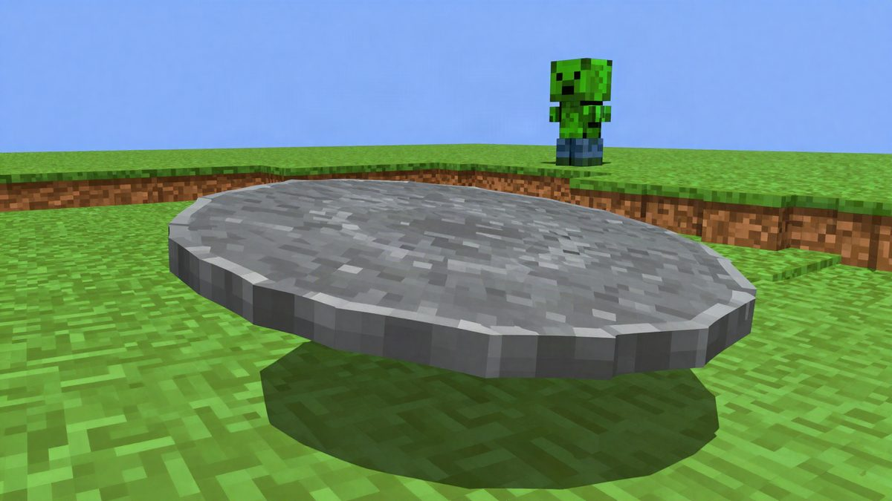

Minecraft dobiva throwing disc, oružje koje se vraća nakon bacanja

Studio Minecrafta je na TwitchConu predstavio throwing disc, novo oružje za daljinsku borbu u Minecraftu koje se nakon bacanja vraća igraču. Izlazi u pet izvedbi, od željeza do netheritea, a datum izlaska nije poznat. Dio igrača traži drugo ime, a najpopularniji prijedlog je Chakram.
Mojang je 14. studenoga na TwitchConu predstavio novo oružje za Minecraft, throwing disc. Namijenjen je daljinskoj borbi, a Mojang kaže da se nakon bacanja vraća igraču.
Mojang ga opisuje kao novi projektil uz već postojeće stvari koje se mogu bacati, poput snowballa i novih ice ballova. Domet mu nije velik, ali se može povećati ako se disc odbije od tvrde površine. Tada odskače i leti nešto dalje.
Riječ je o oružju u izvedbama od željeza, bronce, zlata, dijamanta i netheritea. Time se nastavlja linija tiered oružja i alata. Mojang je 2025. dodao koplje, prvi novi tiered alat u 15 godina.
Zajednica traži drugo ime
Dio igrača smatra da je naziv throwing disc nedovoljno inventivan. Zvuči im kao opis, a ne kao ime oružja, pa se ne uklapa uz koplja, maces i mačeve. Na Redditu se pojavio zahtjev da se ime promijeni, a najpopularniji prijedlog je Chakram, kružno oružje za bacanje podrijetlom iz Indije, koje se pojavljuje u drevnim epovima.
Predloženo je i ime Frisbee, no jedan korisnik u raspravi navodi da se ne uklapa u Minecraft, a i zaštićeno je. Treći prijedlog, discus, također ne odgovara jer oružje nije prsten. Jedan komentator rekao je da bi Frisbee bio "goofy", a Chakram dobar.
Protivnici promjene navode da mnoga djeca ne znaju što je Chakram, dok je throwing disc odmah razumljiv. Autor članka odgovara da se Minecraft često koristi i u edukaciji, pa bi igrače mogao upoznati s tim oružjem.
Postoji i praktičan argument. Discovi u Minecraftu već postoje kao music discovi koji se stavljaju u Jukebox i izgledaju potpuno drukčije od novog oružja. Naziv Chakram jasnije bi razlikovao ta dva predmeta.
Mojang se o promjeni imena za sada nije izjasnio.
Izvor: TheGamer